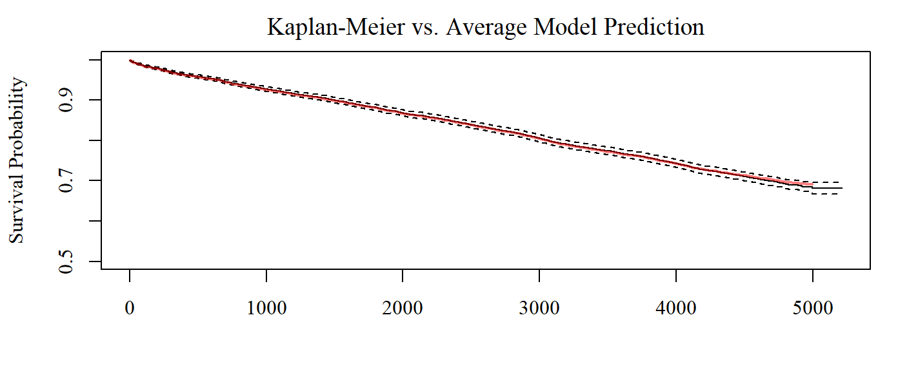
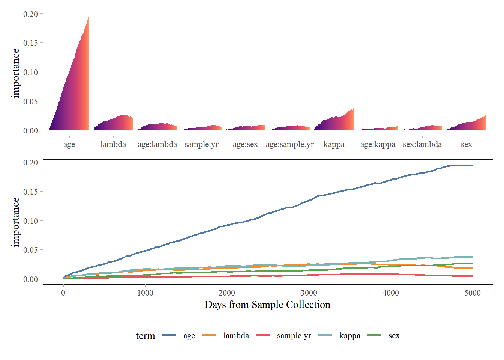
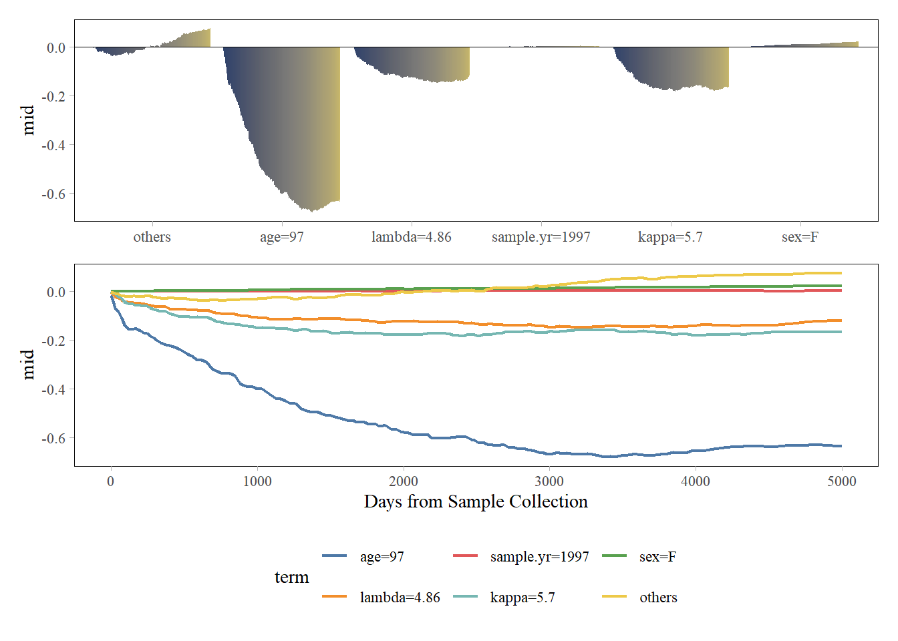

Code
# required packages
library(survival)
library(randomForestSRC)
library(midr)
library(ggplot2)
library(gridExtra)
library(patchwork)
theme_set(theme_midr())
data(flchain, package = "survival")We are thrilled to announce the release of {midr} 0.6.0. This update brings the core principles of the MID framework to a highly requested domain: Survival Analysis.
With this release, users can now decompose and interpret complex, “black-box” survival models—such as Random Survival Forests (RSF)—just as easily as standard regression and classification models.
Key new features in 0.6.0 include:
Native Support for Survival Models: The interpret() function now natively supports some survival models including Cox proportional hazard models ({survival}) and random survival forests ({randomForestSRC}, {ranger}).
Time-Dependent Sequence of MID Models: Because predicted survival probabilities change over time, {midr} now calculates and returns an array of time-varying MID surrogate models.
Here is a look at how {midr} 0.6.0 interprets a Random Survival Forest model using the flchain dataset.
Sample size: 7874
Number of deaths: 2169
Number of trees: 100
Forest terminal node size: 20
Average no. of terminal nodes: 245.65
No. of variables tried at each split: 3
Total no. of variables: 5
Resampling used to grow trees: swor
Resample size used to grow trees: 4976
Analysis: RSF
Family: surv
Splitting rule: logrank *random*
Number of random split points: 10
(OOB) CRPS: 463.97868952
(OOB) standardized CRPS: 0.09283287
(OOB) Requested performance error: 0.29424417
Call:
interpret(formula = Surv(futime, death) ~ (age + sex + sample.yr +
kappa + lambda)^2, data = flchain, model = rsf_model, na.action = na.pass,
lambda = 0.05)
Model Class: rfsrc, grow, surv
Intercept: 0.99962, 0.99559, 0.99339, ...
Main Effects:
5 main effect terms
Interactions:
10 interaction terms
Uninterpreted Variation Ratio: 0.80268, 0.56310, 0.39994, ...Baseline survival probabilities, i.e. the average predicted survival probabilities, are stored as $intercept.
Here, we compare the intercepts with the Kaplan-Meier curve.
km_fit <- survfit(
Surv(futime, death) ~ 1, data = flchain
)
par.midr()
plot(
km_fit,
main = "Kaplan-Meier vs. Average Model Prediction",
# xlab = "Days from Sample Collection",
ylab = "Survival Probability",
ylim = c(0.5, 1.0)
)
lines(
x = as.numeric(labels(mid_model)),
y = mid_model$intercept,
col = "#FF000080",
lwd = 2
)
Since {midr} fits as many models as the number of time periods of interest, the uninterpreted variation ratio changes with time.
imp <- mid.importance(mid_model)
p <- ggmid(
imp,
theme = "magma",
terms = rev(head(mid.terms(imp), 10))
) +
theme(legend.position = "none") +
coord_flip()
q <- ggmid(
imp,
type = "series",
theme = "Tableau 10",
terms = mid.terms(imp, interactions = FALSE),
linewidth = 3/4
) +
labs(x = "Days from Sample Collection") +
theme(legend.position = "bottom")
p / q
brk <- mid.breakdown(mid_model, data = flchain[1 ,])
p <- ggmid(
brk,
theme = "cividis",
terms = rev(head(mid.terms(imp, interactions = FALSE)))
) +
theme(legend.position = "none") +
coord_flip()
q <- ggmid(
brk,
type = "series",
theme = "Tableau 10",
terms = mid.terms(imp, interactions = FALSE),
linewidth = 3/4
) +
labs(x = "Days from Sample Collection") +
theme(legend.position = "bottom")
p / q